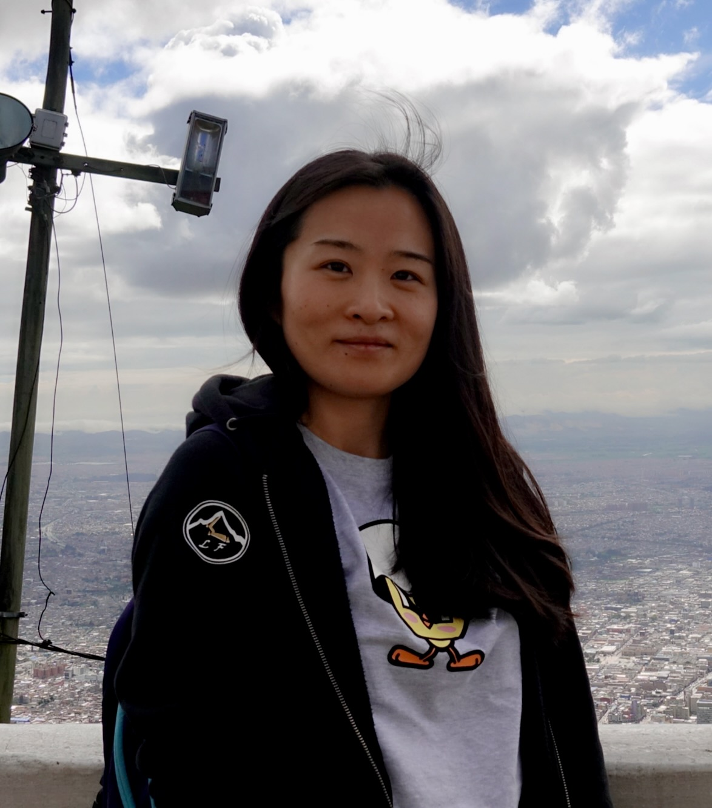

Qing Zhang
Home
|  |
Qing Zhang (张庆)
I'm a Visiting Assistant Professor in the Department of Mathematics at UC Santa Barbara supervised by Zhenghan Wang.
Here is a copy of my CV.
[Google Scholar]
E-mail: qingzhang@ucsb.edu
Office: South Hall 6522
Office hours (Fall 2024): Tuesday, Thursday 3:15-4:45 pm
|
Publications and Preprints
Realizing modular data from centers of near-group categories, with Z. Yu.
Preprint: arXiv:2412.20763 (2024).
The Condensed Fiber Product and Zesting, with C. Delaney, C. Galindo, J. Plavnik and E. Rowell.
Preprint: arXiv:2410.09025 (2024). Submitted.
Modular data of non-semisimple modular categories, with L. Chang, Q. Kolt and Z. Wang.
Preprint: arXiv:2404.09314 (2024).
To appear in to appear in International Journal of Mathematics
On near-group centers and super-modular categories, with E. Rowell and H. Solomon.
To appear in Contemporary Mathematics
G-crossed braided zesting, with C. Delaney, C. Galindo, J. Plavnik and E. Rowell.
Journal of the London Mathematical Society, 109 (2024), no. 1, e12816.
Modular tensor categories, subcategories, and Galois orbits, with J. Plavnik, A. Schopieray and Z. Yu.
Transformation Groups, (2023): 1-26.
From Torus Bundles to Particle-Hole Equivariantization, with X. Cui, P. Gustafson and Y. Qiu.
Letters in Mathematical Physics, 112.1 (2022): 1-19.
Higher central charges and Witt groups, with S.-H. Ng, E. Rowell and Y. Wang.
Advances in Mathematics, 404 (2022): 108388.
Modular categories with transitive Galois actions, with S.-H. Ng and Y. Wang.
Communications in Mathematical Physics, 390.3 (2022): 1271-1310.
Braided zesting and its applications, with C. Delaney, C. Galindo, J. Plavnik and E. Rowell.
Communications in Mathematical Physics, 386.1 (2021): 1-55.
Congruence Subgroups and Super-Modular Categories, with P. Bonderson, E. Rowell and Z. Wang.
Pacific Journal of Mathematics, 296.2 (2018): 257-270.
On classification of super-modular categories of rank 8, with P. Bruillard, J. Plavnik and E. Rowell.
Journal of Algebra and Its Applications, 20.01 (2021): 2140017.
Braid group representations from twisted tensor products of algebras, with P. Gustafson, A. Kimball and E. Rowell.
Peking Mathematical Journal, 3.2 (2020): 103-130.
Integral Metaplectic Modular Categories, with A. Deaton, P. Gustafson, L. Mavrakis, E. Rowell, S. Poltoratski, S. Timmerman, B. Warren.
Journal of Knot Theory and Its Ramifications, 29.05 (2020): 2050032.
Super-modular Categories, Thesis.
Teaching
Instructor, UCSB, Santa Barbara, CA
Fall 2024, Math 8: Transition to Higher Mathematics
Fall 2024, Math 6A Vector Calculus 1
Spring 2024, Math 4B Differential Equations
Winter 2024, Math 8 Transition to Higher Mathematics Winter 2024, Math 4B Differential Equations Fall 2023, Math 6A Vector Calculus 1
Instructor, Purdue University, West Lafayette, IN
Instructor, Texas A&M University, College Station, TX
Teaching Assistant
|